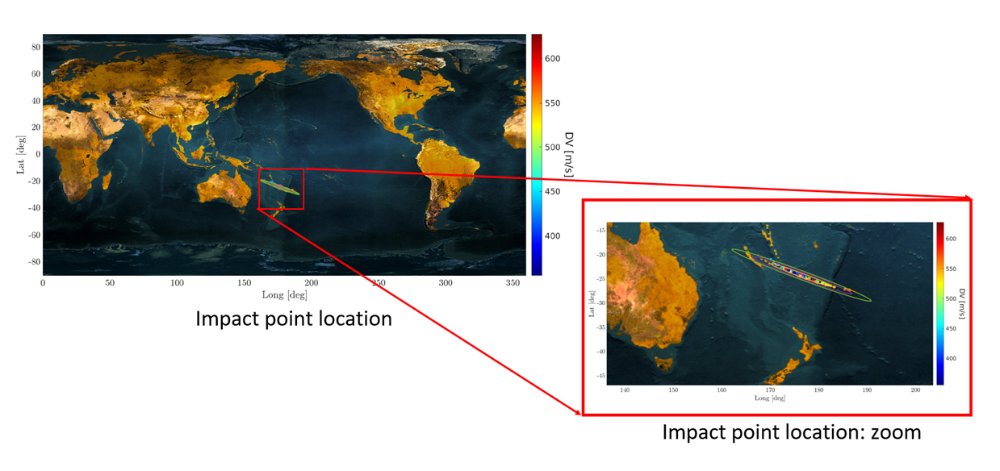

01 · Space domain awareness
Physics-informed orbit determination
Physics-informed neural methods combine sparse angular observations with orbital dynamics for accurate initial orbit determination, maneuver detection, and uncertainty-aware tracking in GEO, X-GEO, and cislunar regimes.
Our approach integrates governing equations and mission constraints directly into learning and optimization, improving data efficiency, physical consistency, and confidence in the resulting decisions.